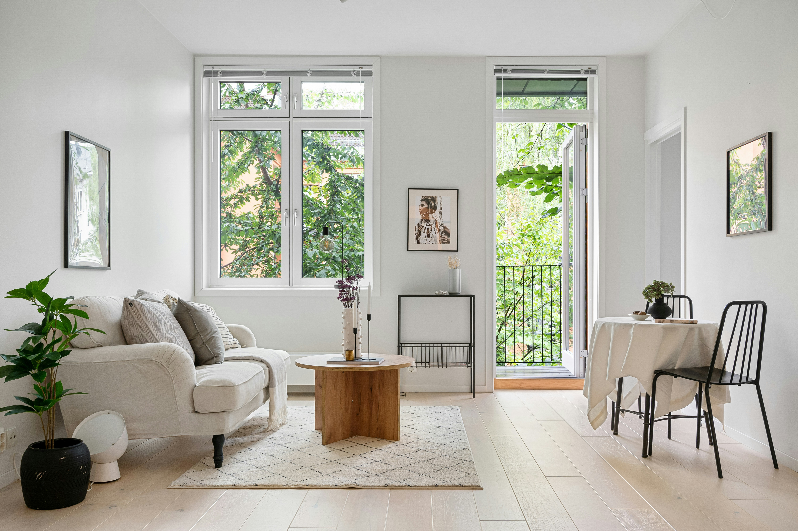
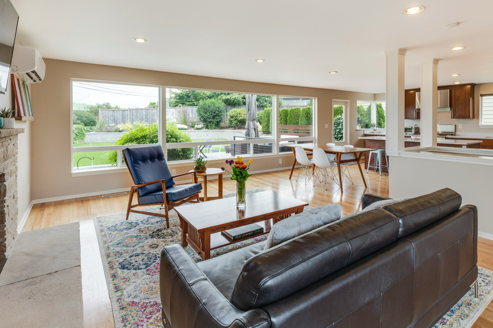

O nama
Tim koji čistoću tretira kao deo ukupnog utiska prostora.
MS Sjaj je nastao iz potrebe da profesionalno čišćenje ne bude samo tehnička usluga, već iskustvo koje uliva sigurnost, jasnoću i mir već od prvog kontakta.
Naš fokus
Jasan dogovor, diskretan rad i završnica koja ostavlja uredan utisak.Klijent od prvog kontakta zna obim usluge, tok rada i standard završnice koji dobija.

Poverenje gradimo kroz preciznost, doslednost i ozbiljan odnos prema prostoru.
Od prvog dana, cilj nam je bio jednostavan: da ponudimo uslugu koja izgleda profesionalno u svakom koraku, od zakazivanja do završnog vizuelnog utiska u prostoru.
Klijenti nam se vraćaju zato što znaju da će dobiti jasan dogovor, diskretan tim i rezultat koji se vidi odmah. Bez viška obećanja, bez improvizacije i bez kompromisa kada su detalji u pitanju.

Ne čistimo samo površine, već utisak koji prostor ostavlja posle našeg rada.
Kada završimo tretman, cilj nije samo da prostor bude formalno čist, već da deluje rasterećeno, sabrano i spremno za svakodnevni život ili posao bez dodatnog sređivanja.
Zato kod nas način rada, ritam dolaska i kontrola završnice imaju istu težinu kao i sama usluga. Upravo taj spoj organizacije i vizuelnog rezultata čini da klijenti MS Sjaj doživljavaju kao ozbiljan standard.
Način rada nam je jednako važan kao i rezultat.
Da svaki prostor posle našeg rada izgleda uredno, pouzdano održavano i spremno za život ili posao.
Da budemo prvi izbor za profesionalno čišćenje stanova i kancelarija kada je potreban ozbiljan standard usluge.
Tačnost, jasan obim rada, diskretan tim i završnica koja se primećuje bez dodatnog objašnjenja.
Proces koji deluje jednostavno, a ostavlja ozbiljan profesionalni utisak.
Procena i dogovor
Dogovaramo tip prostora, nivo tretmana i termin koji ne remeti vaše obaveze.
Izvođenje bez haosa
Tim radi organizovano, sa jasnim sledom koraka i poštovanjem prostora klijenta.
Kontrola završnice
Poslednji detalji su ono što menja utisak, zato im posvećujemo posebnu pažnju pre predaje prostora.
Ako želite ozbiljnu uslugu, dogovor počinje jednostavno.
Pošaljite upit ili nas pozovite. Dobićete jasan predlog usluge i termin koji ima smisla za vaš prostor.
- Diskretan tim na terenu
- Precizan operativni plan
- Kontrola završnog utiska